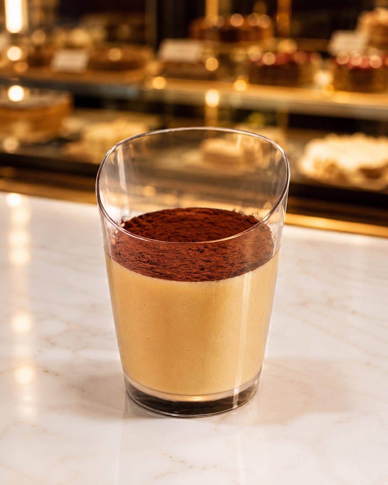

Postres en vaso
Las Claves de la Pastelería · Clase de Postres en vaso
Vaso tiramisú
Tiramisú en vaso con bizcocho melindros, crema de mascarpone montada con pasta bomba, almíbar de café con Amaretto y decoración de chocolate. Cuatro elaboraciones.
EscuelaEcoleCursoLas Claves de la PasteleríaChef instructoraFernanda PérezDía de realización13 de julio de 2026
Páginas 6 a 9 del PDF escaneado (páginas impresas 26 a 29).
Elaboraciones
Esta receta reúne 4 elaboraciones, en el orden en que se montan. Las anotaciones de clase van al final de cada una, separadas del paso a paso.
a
Bizcocho melindros (lengüitas)
Página 6 del PDF escaneado (página impresa 26).
Ingredientes
| Clara | 30 g |
| Yema | 20 g |
| Azúcar | 30 g |
| Harina | 30 g |
| Azúcar flor (deco) | 30 g |
Procedimiento
- Separar los huevos.
- Montar las claras en la máquina con ayuda de un globo.
- Añadir el azúcar, en 3 tandas, en forma de lluvia, hasta que la mezcla esté firme.
- Añadir las yemas en tandas, manualmente con mezquino, de forma envolvente.
- Terminar agregando la harina, en tandas, de forma envolvente.
- Con boquilla N.° 10, manguear pequeños círculos que quepan dentro del vaso.
- Espolvorear azúcar flor antes de hornear.
- Horno a 160 °C por 8 minutos.
Notas y anotaciones de clase
- Junto al título: «lengüitas» (lectura confirmada).
- Junto al montado de las claras: «duplicar tamaño».
- «Masa de brazo de reina».
- «Para torta 3 leches».
- Corrección confirmada: la temperatura impresa de 180 °C se ajusta a 160 °C («bizcochos 160»).
b
Crema de mascarpone (con pasta bomba)
Página 7 del PDF escaneado (página impresa 27).
Ingredientes
| Azúcar | 40 g |
| Agua | 13 g |
| Yema | 33 g |
| Mascarpone | 167 g |
Procedimiento
- Poner en una olla el agua y el azúcar a hervir.
- Por otro lado, en la máquina batir las yemas con un globo.
- Calentar el mascarpone para poder pomarlo.
- Reducir la velocidad de las yemas, agregar el almíbar en forma de hilo y batir.
- Añadir la pasta bomba al mascarpone de a poco con ayuda del mezquino y luego batir hasta que quede completamente homogénea.
Notas y anotaciones de clase
- Junto al título: «yemas batidas con almíbar».
- «El almíbar baja la carga bacteriana».
- «No busca color, solo disolver».
c
Almíbar de café
Página 8 del PDF escaneado (página impresa 28).
Ingredientes
| Azúcar | 40 g |
| Agua | 40 g |
| Café instantáneo disuelto | 80 g |
| Amaretto | 3 g |
Procedimiento
- Hervir el agua con el azúcar hasta que el azúcar desaparezca.
- Enfriar y añadir el café y el Amaretto.
d
Decoración de chocolate
Página 9 del PDF escaneado (página impresa 29).
Ingredientes
| Chocolate blanco | 100 g |
| Cacao en polvo | 50 g |
Procedimiento
No indicado en el documento original.